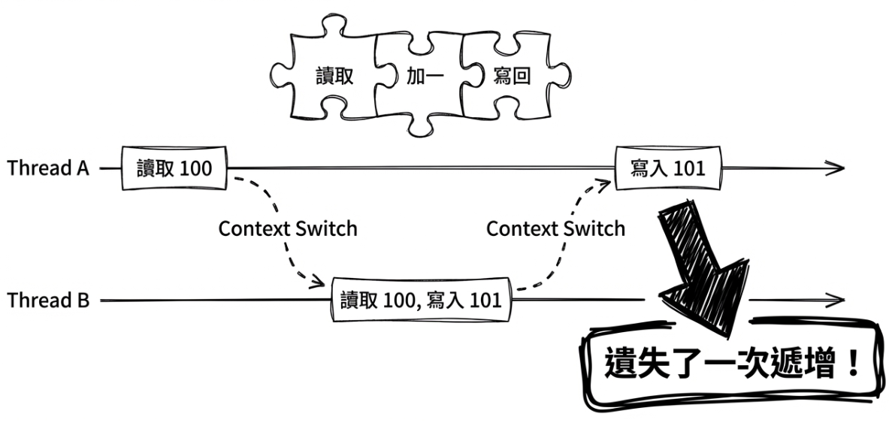
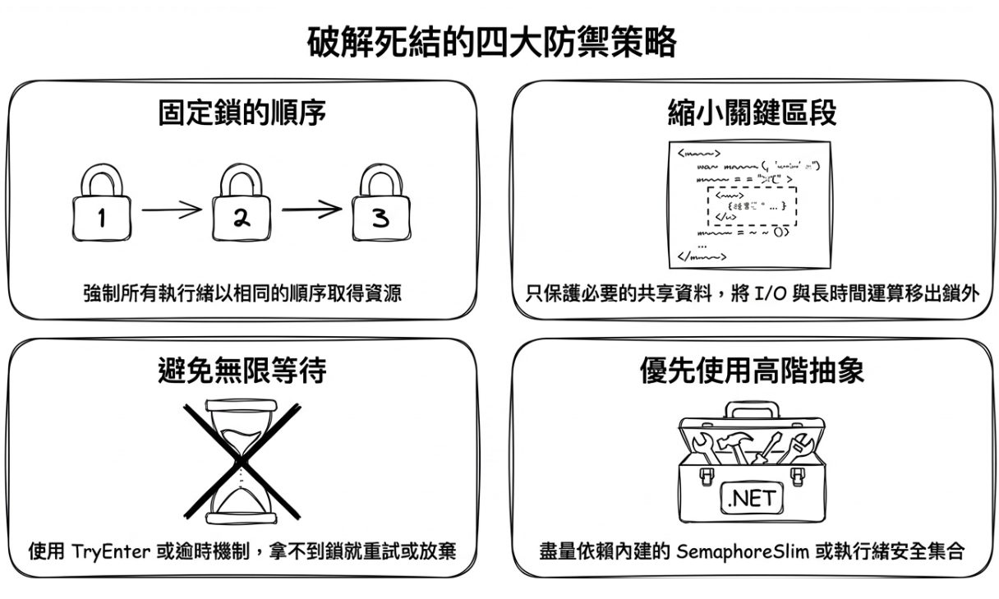
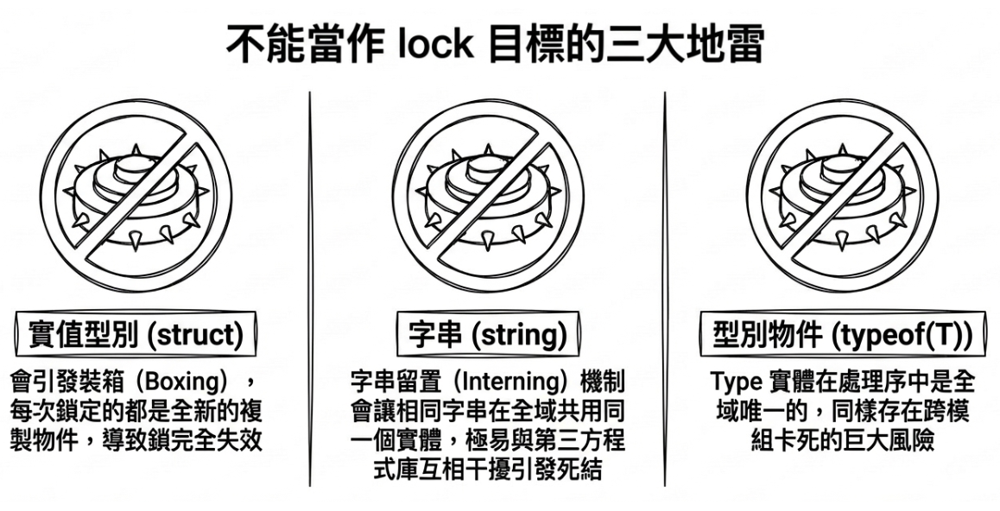
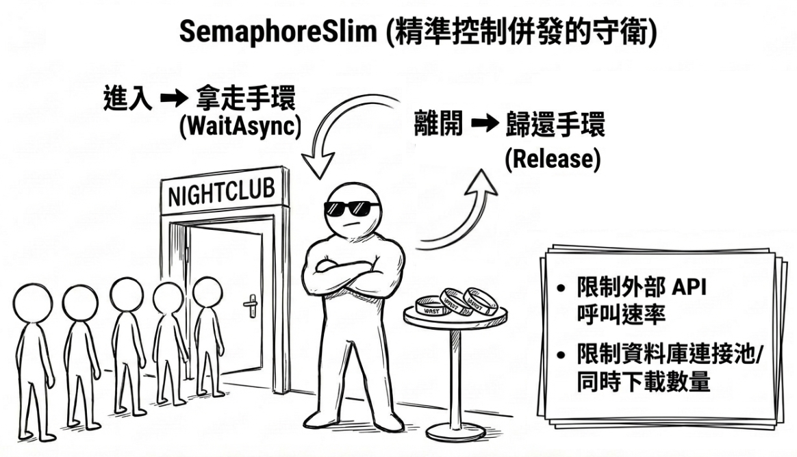
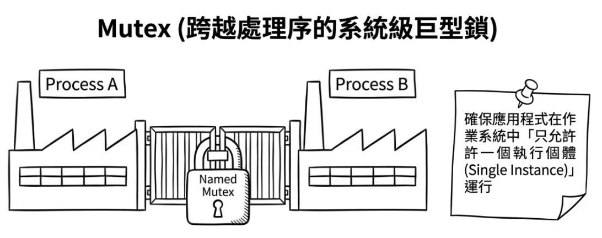
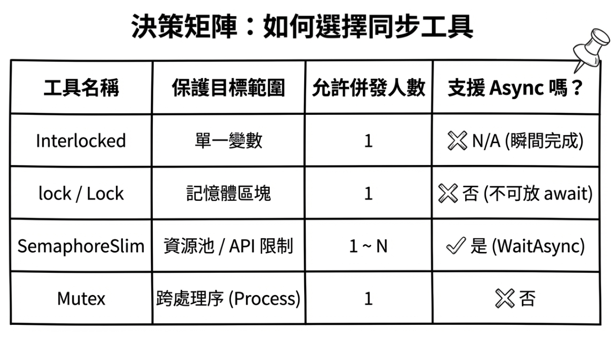

第 5 章：執行緒同步與經典問題

到目前為止，我們已經學會了如何使用 Task.Run 和 async/await 來執行非同步與併發操作。前者常用來把 CPU-bound 工作交給背景執行緒處理，後者則讓我們在等待 I/O 時不必阻塞執行緒，從而維持應用程式的回應性。不過，當多條執行緒開始真正「平行」執行時，另一個更棘手的問題也跟著浮現了：如果它們需要同時存取同一份資料，會發生什麼事？
想像一下銀行系統，A 帳戶和 B 帳戶同時向 C 帳戶轉帳。如果系統沒有處理好這兩個同時發生的操作，C 帳戶的最終餘額很可能會出錯，造成銀行或客戶的損失。
這就是執行緒同步（thread synchronization） 要解決的問題。它的核心目標是：確保當多條執行緒存取共享資源時，資料的完整性與一致性不會被破壞。
本章會進入多執行緒程式設計中最核心、也最具挑戰性的領域。學習目標包括：
- 透過實際範例，理解為何需要同步機制。
- 認識兩個經典問題：競爭狀況 (race condition) 與死結 (deadlock)。
- 掌握 .NET 中最關鍵的同步工具：
Interlocked、lock、SemaphoreSlim與Mutex。
為何需要同步：共享資料的風險
先看一個簡單的計數器範例。此範例會啟動兩個任務，各自對同一個共享計數器變數 counter 執行一百萬次遞增操作：
int counter = 0;
// 啟動兩個 Task，併發地對 counter 進行遞增
Task task1 = Task.Run(() =>
{
for (int i = 0; i < 1_000_000; i++)
{
counter++;
}
});
Task task2 = Task.Run(() =>
{
for (int i = 0; i < 1_000_000; i++)
{
counter++;
}
});
// 等待兩個 Task 都完成
Task.WaitAll(task1, task2);
Console.WriteLine($"計數器的最終結果是: {counter}");按直覺來看，計數器的最終結果應該是 2000000。然而，當你實際執行這段程式碼時，會發現輸出的結果並不可靠，往往達不到 2000000。最終數字可能是 1384127 或 1098221，每次執行都可能跑出不同的結果；甚至偶爾還會「看起來剛好正確」。這正是併發程式設計中最難除錯的地方：錯誤不會每次都穩定出現，而工作排程的微小時序差異也會影響問題是否發生。
實際的執行結果會類似這樣：
注意： 每次執行的結果都可能不同；偶爾甚至可能「碰巧看起來正確」而得到 2000000。
原始碼： DemoRaceCondition
究竟為什麼計數器的最終結果不是 2000000？問題就出在 counter++ 這個看似單純的語法上。如果切換到電腦內部的運作視角，這並不是一個「原子操作 (atomic operation)」，而是由三個獨立的步驟組成：
- 讀取
counter的目前值到 CPU 暫存器。 - 在暫存器中將該值加一。
- 將暫存器中的新值寫回
counter的記憶體位置。
由於這三個步驟是可以被中斷的（作業系統的排程器可以在任何兩條機器指令之間進行 context switch），當我們讓兩條執行緒同時執行這段程式碼時，就可能會發生下面這種情境：
Thread A讀取counter的值（假設是 100）。- 此時發生
context switch，作業系統將 CPU 控制權交給Thread B。 Thread B也讀取counter的值（它仍然是 100）。Thread B將值加一（變成 101），並寫回counter。現在counter是 101。context switch再次發生，控制權回到Thread A。Thread A從它上次中斷的地方繼續，將它暫存器中的值（100）加一，得到 101。Thread A將 101 寫回counter。
最終，雖然兩條執行緒都執行了遞增操作，但 counter 的值只從 100 變成了 101，而不是我們預期的 102。一次遞增操作就這樣遺失了。當這個情境發生數十萬次時，最終結果的巨大誤差也就不難理解了。

經典問題
剛才介紹的計數器範例展示了多執行緒程式設計中的第一個經典難關：競爭狀況（race condition）。為了將基礎打穩，接下來我們會先把它定義清楚，接著再來看另一個同樣常見、甚至更難排查的問題：死結（deadlock）。
競爭狀況（race condition）
競爭狀況 (race condition) 描述的是一種不可預期的行為：當多個執行緒併發執行時，程式的最終結果取決於各執行緒競爭執行的相對時間順序。
剛才的計數器範例就是一個典型的競爭狀況。因為 counter++ 這個「讀取-修改-寫回」的執行序列隨時可能被另一條執行緒中斷，導致最終結果取決於哪條執行緒「跑得比較快」，結果也就變得無法預測了。
Note
競爭狀況是多執行緒程式中最難除錯的問題之一，因為它們通常是間歇發生，很難穩定重現。更具體來說，同一段程式碼在雙核心的開發機上可能幾乎看不到問題，但在生產環境的多核心伺服器上，多執行緒真正同時執行的機會大增，競爭狀況就會更頻繁地浮現。實務上，可靠的做法是先識別所有可能被多執行緒存取的共享資源，然後選擇適當的保護方式，例如同步機制、不可變資料，或直接避免共享可變狀態。
死結（deadlock）
如果說競爭狀況像是大家「搶成一團」，那麼死結 (deadlock) 就比較像是大家「僵持不下」。
這種情況通常發生在：兩個或多個執行緒各自持有對方需要的資源，同時又在等待對方先釋放資源。在沒有外力介入的情況下，這會形成一個無限等待的循環。
這裡用一個經典的「銀行轉帳」比喻來解釋。假設現在系統中有兩條執行緒在運作：
Thread A：要從帳戶 X 轉帳到帳戶 Y。Thread B：要從帳戶 Y 轉帳到帳戶 X。
為了確保轉帳的原子性，我們規定在操作帳戶前必須先「鎖定」它。現在想像以下執行順序：
Thread A成功鎖定了帳戶 X。Thread B成功鎖定了帳戶 Y。Thread A嘗試鎖定帳戶 Y 以完成轉帳，但發現 Y 已被Thread B鎖定，於是Thread A進入等待狀態。Thread B嘗試鎖定帳戶 X 以完成轉帳，但發現 X 已被Thread A鎖定，於是Thread B也進入等待狀態。
此時，Thread A 正在等待 Thread B 釋放 Y，而 Thread B 也正在等待 Thread A 釋放 X。由於雙方都不肯退讓，它們將會永遠等待下去，導致整個轉帳系統就這樣鎖死了。
常見死結預防策略
死結通常不是發生在「同一把鎖」上，而是發生在「多把鎖彼此交互等待」的情境。在實務上，可以先記住下面幾個常見策略（其中提到的 .NET 類別會在稍後介紹）：
- 固定鎖的取得順序：當需要同時鎖定多個資源時，所有執行緒都必須遵守相同的鎖定順序。例如在銀行轉帳情境中，可以規定「永遠先鎖定帳戶號碼較小的帳戶，再鎖定號碼較大的」。這樣一來，無論是從 X 轉帳到 Y 或從 Y 轉帳到 X，所有執行緒都會先嘗試鎖定同一個帳戶。固定順序之所以有效，是因為它從根本上消除了「循環等待」的可能性：若所有人都先取 X 再取 Y，就不可能出現 Thread A 持有 Y 等待 X、Thread B 持有 X 等待 Y 的僵局。
- 縮小關鍵區段（critical section）：只保護必要的共享資料，即「上鎖」時，不要把 I/O、長時間運算或等待操作放進鎖內。
- 避免無限等待：盡可能使用支援「嘗試取得鎖」的方法（例如
Monitor.TryEnter），或使用帶逾時參數的等待機制（例如Mutex.WaitOne(timeout)）。若無法取得鎖就放棄或重試，而不是無限期地阻塞。 - 優先使用高階抽象：能用
SemaphoreSlim、執行緒安全集合或訊息佇列時，盡量少手寫多鎖協調。

同步機制
為了解決上述的競爭狀況與死結風險，.NET 提供了多種同步機制。儘管實作細節各異，這些工具其實都在做同一件事：為程式碼劃定並保護「關鍵區段（critical section）」。這代表在同一時間，只允許有限數量的執行緒（甚至只允許一條執行緒）進入該區塊執行。
針對不同的併發需求，本節會先從最常見、最具代表性的工具看起，再逐步展開到特定的應用場景：
Interlocked：當你只需要對單一共享欄位進行原子操作時（例如計數器、狀態旗標），這是最輕量的選擇。lock與System.Threading.Lock：當你要保護單一共享資料，並確保一次只有一條執行緒可進入時，這是首選。SemaphoreSlim：當你不是要「一次一個」，而是要「一次最多 N 個」並行操作時使用。Mutex：當同步範圍要跨越不同處理序（processes）時使用（例如防止應用程式重複啟動）。
先掌握這四類工具，你就能依「同步範圍」與「允許併發數」（可同時進入的數量上限）快速判斷該用哪一種機制。
Interlocked：單一欄位的原子操作
在處理計數器、狀態旗標或參考交換等簡單情境時，如果你只需要對單一共享欄位進行操作，通常可以使用比較輕量的 Interlocked 類別。
Interlocked 能提供作業系統與 CPU 層級保證的原子操作。它的常見方法包括：
Interlocked.Increment/DecrementInterlocked.AddInterlocked.ExchangeInterlocked.CompareExchange
接著用 Interlocked.Increment 來修正本章開頭的計數器問題。以下範例會改用 Parallel.For 執行一百萬次遞增操作，並透過 Interlocked.Increment 確保每一次遞增都不會互相干擾：
這裡使用的 Parallel.For 是 .NET 提供的平行迴圈工具，它會自動把迭代分配給多個執行緒同時執行。在這個範例中，我們刻意用它來製造「多執行緒同時競爭」的情境，好驗證 Interlocked.Increment 的原子性保證。至於 Parallel 類別的詳細用法，會在第 7 章介紹。
原始碼： DemoInterlocked
不過，Interlocked 雖然很適合解決計數器的競爭問題，適用範圍仍然有限。它只適合單一欄位的原子更新。一旦你的商業邏輯牽涉到「多個欄位必須一起改變並維持一致性」，這時 Interlocked 就力有未逮了。即使你對每個欄位分別呼叫 Interlocked，也無法保證其他執行緒看到的是一致的狀態——它可能在你更新完第一個欄位、還沒更新第二個欄位的空隙讀到半途中的值。這時你應該改用 lock 或其他同步機制來保護整個關鍵區段。
lock 關鍵字：最簡單的鎖
lock 是 C# 中最普遍、寫起來也最單純的同步機制。它能確保在 lock 所包圍的區塊內，同一時間絕對只有一條執行緒可以進入執行。
要使用 lock，你必須先準備一個所有執行緒都能存取到的「鎖物件」。實務上，這個物件通常是一個私有、唯讀的 object 欄位。
下面用 lock 改寫最初那個會出錯的計數器範例：
// 使用 lock 保護計數器
var counter = new ThreadSafeCounter();
Task task1 = Task.Run(() =>
{
for (int i = 0; i < 1_000_000; i++)
counter.Increment();
});
Task task2 = Task.Run(() =>
{
for (int i = 0; i < 1_000_000; i++)
counter.Increment();
});
Task.WaitAll(task1, task2);
// 結果永遠是 2000000
Console.WriteLine($"計數器的最終結果是: {counter.Value}");
public class ThreadSafeCounter
{
private int _count = 0;
private readonly object _lock = new object(); // 鎖物件
public void Increment()
{
lock (_lock) // 進入關鍵區段
{
_count++;
}
}
public int Value
{
get
{ // 此範例的 getter 不一定非得上鎖
lock (_lock)
{
return _count;
}
}
}
}值得一提的是，在這個範例的執行流程裡，由於主程式已經預先呼叫了 Task.WaitAll 來等待兩個任務都完成，之後才讀取 Value 屬性，因此這裡的 getter 其實不加 lock 也會得到正確結果——Task.WaitAll 確保了兩個任務的所有寫入都已完成，讀取端才接著執行，順序上不存在競爭。然而，如果你打算將 ThreadSafeCounter 設計成一個可供各處重複使用的執行緒安全型別，那就必須採取更嚴謹的態度：讓讀取與寫入行為共用同一把鎖。這才是通用且安全的建議作法。
原始碼： DemoLock
經過這樣的修改，一旦任何執行緒想要遞增 _count 或讀取 Value，都必須先取得 _lock 物件的獨佔鎖。如果這把鎖已經被其他執行緒持有，後來的執行緒就必須等待。等取得鎖的執行緒離開 lock 區塊，該鎖會自動釋放，下一條等待中的執行緒才有機會進入。透過這樣的機制，_count++ 的「讀取-修改-寫回」操作就被嚴格包裝成一個不可分割的單位，讀取端也就不可能在更新過程進行到一半時，看到處於過渡期的錯誤數值。
鎖物件 _lock 之所以宣告為 private readonly object，原因如下：
- private: 確保只有這個類別的內部可以鎖定它，避免外部程式碼不小心鎖住同一個物件而引發死結。
- readonly: 確保鎖物件本身不會被意外替換掉。
- object: 任何參考型別都可以，但
object是最單純的選擇。
這裡要特別提醒的是，雖然只要是參考型別都可以上鎖，但請盡量避免鎖定以下三種東西，否則一旦出錯，可能會引發極難追蹤的死結或同步錯誤：
- 實值型別 (
struct)：不能直接拿實值型別當作lock目標，C# 編譯器會直接報錯。請特別注意，不要為了繞過編譯錯誤而手動將實值轉型成object後再上鎖；因為這會觸發裝箱（boxing）動作，導致每次上鎖時都產生不同的物件，讓鎖的保護機制完全失效。 - 字串 (
string)：這是一個眾所皆知的「反模式 (anti-pattern)」。由於 .NET 的「字串留置 (string interning)」機制，預設會將相同內容的字串常值（以及明確呼叫string.Intern()的字串）指向同一個物件實體。如果你鎖定"my_lock"，碰巧另一個不相干的第三方套件也鎖定了"my_lock"，你們兩邊就會互相阻塞，造成難以預期的跨模組死結。雖然動態建構的字串通常不會被留置，但你無法保證第三方程式碼不會明確 intern 相同內容的字串，因此字串整體而言都是危險的鎖物件。 - 型別物件 (
typeof(T))：原因與字串類似。同一個型別所對應的Type實例，在整個處理序的記憶體空間中是唯一且全域共享的。

Note
C# 不允許在
lock區塊中使用await——無論鎖定目標是傳統的object還是 .NET 9+ 的System.Threading.Lock皆然。前者因為Monitor具有執行緒親和性；後者因為Lock.Scope是ref struct，不能跨越await邊界存在。如果關鍵區段內需要等待非同步作業，請改用SemaphoreSlim(1, 1)這種 async-friendly 的互斥寫法（但須注意其陷阱，見後文）。
傳統 lock(object) 與 Monitor 的關係
當 lock 的目標是一個一般的參考型別（例如 object）時，lock 關鍵字可以視為 Monitor 類別的語法糖。當你寫下：
編譯器會將它轉換成類似以下的程式碼：
不過，這套轉換邏輯主要是針對傳統的 lock(object) 寫法。自從 C# 13 與 .NET 9 推出後，如果你宣告的鎖物件是 System.Threading.Lock，編譯器就會採取專屬的最佳化路徑，在底層等同於產生 using (_lock.EnterScope()) { ... }，而不再透過傳統的 Monitor.Enter/Exit。
在絕大多數情況下，直接使用 lock 關鍵字就已經足夠，因為它既簡潔又能自動處理釋放資源的問題。只不過，當某些進階場景需要更細緻的控制時，直接呼叫 Monitor 類別的方法會更有彈性。舉例來說，在稍早談到的死結預防策略之一：避免無限等待，就可以利用 Monitor.TryEnter 來達成：
這種寫法的好處是，當程式無法立即取得鎖時，還有機會改採其他策略，而不是無限期等待，從而降低死結風險。
延伸閱讀： 微軟文件 The lock statement - ensure exclusive access to a shared resource
更現代的鎖：System.Threading.Lock (.NET 9+)
前面提到，傳統 lock (object) 會由編譯器展開成 Monitor.Enter/Exit。在 .NET 9 以上，如果你只需要一把處理序內使用的鎖，還可以改用專門的鎖定型別：System.Threading.Lock。它的用法和傳統 lock 很相似，但語意更明確，在高併發場景下也更有效率：
除了支援 lock 關鍵字，System.Threading.Lock 還提供了一個更明確的 API：EnterScope()。這個方法會回傳一個 ref struct Lock.Scope 結構；雖然它不是透過實作 IDisposable 來運作，但它有提供 Dispose() 方法，因此很適合配合 using 語句使用：
這表示在離開 using 區塊時會自動釋放鎖。參考微軟文件：Lock.Scope 結構。
原始碼： DemoLockNet9Plus
這種寫法的好處在於，若你搭配 using 來管理範圍，即使發生例外，也能自動釋放鎖。此外，System.Threading.Lock 還提供了 Enter、TryEnter、Exit 等進階方法，讓你在需要時採用更明確的控制方式。
建議
如果你的專案已經升級到 .NET 9 或更新的版本，建議在程式中優先使用
System.Threading.Lock來取代傳統的object鎖。這樣不只能獲得更清楚的語意，在競爭不激烈的情境下效能也比傳統Monitor更好。
延伸閱讀： 微軟文件 Lock Class
lock 與 async 的邊界
這裡要停下來整理幾個重點，因為這是很多人從同步程式碼過渡到非同步程式碼時最容易踩到的坑：
lock是一種「執行緒導向」的同步機制，它的目標是保護短小、沒有 I/O 阻塞、且維持同步執行的關鍵區段（critical section）。- C# 不允許在
lock區塊內使用await，不論鎖定目標是哪一種皆然：lock(object)：編譯器展開為Monitor.Enter/Exit，而Monitor具有執行緒親和性（即鎖的取得與釋放必須在同一條執行緒上完成）——await之後卻可能在不同執行緒繼續執行，導致鎖無法正確釋放。lock(Lock)（.NET 9+）：鎖定目標是System.Threading.Lock物件時，編譯器展開為using (_lock.EnterScope())，而Lock.Scope是ref struct，不能跨越await邊界存在，編譯器會直接拒絕這種用法。（原因：await會將區域變數提升為 async state machine 的欄位，而ref struct在語言規格上不允許成為欄位。）
如果你的需求是「同一時間只允許一個非同步流程進入」，你應該改用 SemaphoreSlim(1, 1) 來擔任互斥鎖的角色。第一個 1 代表初始可用數量，第二個 1 則是最大上限。若兩者皆為 1，就能確保同一時間只允許一個流程進入，這在語意上等同於互斥鎖。以下範例展示了它的典型用法：
這種「async 互斥」的寫法，在 I/O-bound 工作中很常見。
延伸閱讀： 微軟文件 SemaphoreSlim Class
SemaphoreSlim：限制併發數量
前面介紹的 lock 提供的是「獨佔存取」，也就是一次只讓一個進入。但有些情況下，我們的需求不是「一次只能一個」，而是一次最多允許 N 個。這時候就輪到 SemaphoreSlim 出場了。
註：Semaphore 在英文裡是「號誌、旗號」的意思，它最早被用來管控鐵路列車的通行。
你可以把 SemaphoreSlim 想像成夜店門口的保全。假設這家夜店最多只能容納 100 位客人，而保全手上有 100 個手環（也就是 SemaphoreSlim 的初始計數）。每當放行一位客人進去，保全就會發給他一個手環；每當有客人出來，他就會回收手環。一旦所有手環發放完畢，後來想進門的人就只能排隊，等待下一個空出的手環。

SemaphoreSlim 非常適合用來限制對有限資源的存取，例如：
- 限制同時下載檔案的數量。
- 限制同時呼叫外部 API 的數量。
- 限制資料庫連接池的使用數量。
此外，SemaphoreSlim 對 async/await 特別友善：它提供了 WaitAsync() 方法，讓你的程式碼不必阻塞執行緒，而是能夠以非同步的方式等待可用的「手環」。下面是一個典型範例：
// 限制最多只能有 3 個操作同時執行某個昂貴的工作
SemaphoreSlim _semaphore = new SemaphoreSlim(3, 3);
async Task PerformExpensiveOperationAsync(int id)
{
Console.WriteLine($"任務 {id} 正在等待進入...");
// 非同步地等待號誌（手環）
await _semaphore.WaitAsync();
try
{
Console.WriteLine($"--> 任務 {id} 已進入，正在執行...");
await Task.Delay(2000); // 模擬耗時工作
}
finally
{
// 確保一定會釋放號誌（手環）
_semaphore.Release();
Console.WriteLine($"<-- 任務 {id} 已離開。");
}
}注意 finally 區塊有呼叫 Release()，以確保即使發生例外，號誌（手環）也一定會被歸還。另外，我們在宣告時明確將 maxCount 以及初始計數都設成 3，不只清楚傳達「名額上限就是三個」，而且哪天如果有人不小心多呼叫了 Release() 而導致超出上限時，系統也能及早報錯，方便排查。
原始碼： DemoSemaphoreSlim
執行結果（節錄）：
從這個輸出可以清楚看出：一開始只有 3 個任務能同時進入；必須等其中幾個任務離開後，下一批等待中的任務才會依序獲得放行。
重要：SemaphoreSlim 缺乏重入性的陷阱
當我們將傳統的同步程式碼（使用
lock）轉換為非同步版本（使用await SemaphoreSlim.WaitAsync()）時，最常踩的坑就是重入性（reentrancy）。
lock是具備重入性的，並且與「執行緒」綁定：同一條執行緒如果再次進入它已經持有的同一個lock，並不會被卡住。但
SemaphoreSlim完全沒有執行緒或擁有者的概念，你可以想成它「認環不認人」。如果同一個非同步方法的執行流程（例如遞迴呼叫，或是方法 A 等待方法 B，而兩者都嘗試去拿同一個SemaphoreSlim），呼叫了兩次WaitAsync()，第二次呼叫因為沒有多餘的號誌可拿，就會把自己的流程鎖住。在設計非同步互斥鎖時，這個小細節請務必特別留意。
Mutex：跨處理序同步
Mutex (mutual exclusion) 的功能和 lock 很相似，都是提供獨佔存取。不過它有一個很重要的特點：Mutex 可以是系統級的。也就是說，它可以拿來同步不同處理序 (process) 之間的執行緒。
這在某些特殊情境下非常有用，例如：
- 確保你的應用程式在某個具名 Mutex 的可見範圍內只有一個執行個體（single instance）。
- 多個獨立的應用程式需要協調對同一個共享檔案或硬體資源的存取。

下面範例展示它最常見的使用情境之一：利用具名 Mutex 偵測是否已有另一個執行個體正在使用同一把系統鎖。
Note
以下範例使用了 .NET 10 新增的
NamedWaitHandleOptions（CurrentUserOnly、CurrentSessionOnly）。若目標框架為 .NET 9，可移除該建構式引數，改用new Mutex(false, name)的傳統寫法。
// 建立一個具名的 Mutex。名稱建議使用可跨平台辨識的唯一字串以避免衝突。
// 在 .NET 10 中，可用 NamedWaitHandleOptions 明確限制可見範圍。
using Mutex mutex = new Mutex(
false,
"com.example.myawesomeapp.single-instance.A1B2C3D4",
new NamedWaitHandleOptions
{
CurrentUserOnly = true,
CurrentSessionOnly = true
});
try
{
// 嘗試取得鎖，等待 0 毫秒（立即回傳結果）
if (!mutex.WaitOne(0))
{
Console.WriteLine("應用程式已經在執行中了！請勿重複開啟。");
return; // 離開應用程式
}
try
{
Console.WriteLine("應用程式啟動成功，按 Enter 鍵離開...");
Console.ReadLine();
}
finally
{
// 確保離開時釋放 Mutex
mutex.ReleaseMutex();
}
}
catch (AbandonedMutexException)
{
// 防禦性處理：如果上一個持有此 Mutex 的執行緒異常結束，
// 而此時仍有其他等待者或既有 handle 讓該具名 Mutex 物件持續存在，
// 下一個成功 WaitOne 的等待者就可能收到 AbandonedMutexException。
// 收到這個例外代表目前這個執行個體已取得 Mutex，
// 但不代表被保護的共享狀態一定安全或一致。
Console.WriteLine("偵測到上一次應用程式未正常關閉 (Mutex 被遺棄)。");
// ... 在這裡可以執行狀態驗證或修復邏輯 ...
try
{
Console.WriteLine("應用程式啟動成功，按 Enter 鍵離開...");
Console.ReadLine();
}
finally
{
mutex.ReleaseMutex();
}
}原始碼： DemoMutex
這裡要提醒兩點。第一，Mutex 的命名方式會影響應用程式跨平台時的行為。在 Windows 作業系統中，加上 Global\ 與 Local\ 前綴會影響這把鎖在不同終端機 session 裡的可見範圍；若不指定前綴，預設相當於 Local\。然而一旦切換到了 Linux 或 macOS，這些前綴不一定有相同語意。因此，如果你的程式需要在多平台上實現「只允許一個執行個體（single instance）」，建議避免使用專屬於特定平台的前綴字，改用「反向網域名稱再加上 GUID」作為唯一名稱，並且在上線前先於目標平台測試。
其次，在較新版本的 .NET 開發環境中，特別要注意這類「具名 wait handle」的安全隔離範圍。如果使用傳統的 new Mutex(false, name) 寫法，這把鎖不一定只限於建立它的使用者存取。要是在同一台機器上，其他使用者也能啟動同一套程式碼，其他處理序就有可能打開同名的 Mutex，並造成干擾。為了杜絕這種可能，如果你的需求只是「限制目前這個使用者的單一執行個體」，那就應該使用 NamedWaitHandleOptions.CurrentUserOnly 定義清楚。在剛剛示範的程式裡，我們甚至把 CurrentSessionOnly = true 也明確寫出來，表示這把鎖只會在同一位使用者的當前 session 中可見；若你需要跨 session 分享，則可以把這個屬性設為 false。
Warning: Mutex 的遺棄例外陷阱
跨處理序的
Mutex有一個比較特別的例外行為。如果持有 Mutex 的執行緒異常結束，導致它沒來得及呼叫ReleaseMutex()，結果會依當時是否有其他等待者而分成兩種情況：
- 有其他執行緒正在等待（即 handle 尚未消失）：下一個成功取得 Mutex 的等待者必定收到
AbandonedMutexException。此例外代表 Mutex 所有權已轉移給你的程式，但同時也是警訊——先前持有者可能在共享狀態未完成清理時就異常結束。若 Mutex 保護的是重要資料結構，應先驗證或修復狀態再繼續；若只是用來做「防止重複啟動」的門閂，通常記錄警告後仍可繼續。此情境下應防禦性地catch (AbandonedMutexException)。- 沒有等待者且所有 handle 已關閉：該具名 Mutex 物件本身會直接消失，下一個執行個體建立的是同名的全新 Mutex，不會收到
AbandonedMutexException，通常不需要特別處理。
整體來說，Mutex 是比 lock 更「重」的同步工具，它的效能開銷也比較大，因為會涉及作業系統核心的系統呼叫。對絕大多數只需要在單一應用程式內部協調執行緒的情境來說，lock 或 SemaphoreSlim 依然是更好、也更有效率的選擇。
相關微軟文件：
結語
本章介紹了多執行緒程式設計中最棘手的一類問題。我們先透過一個簡單的計數器範例，看見共享資料在缺乏保護時如何引發「競爭狀況」；並且透過轉帳的範例了解「死結」是怎麼讓多個執行緒陷入無限等待的僵局。
為了克服這些挑戰，我們學習了四種關鍵的同步機制：
Interlocked：用於單一共享欄位的原子操作（例如遞增計數器、交換旗標），在合適場景下比lock更輕量。lock與System.Threading.Lock：用於建立簡單的獨佔關鍵區段，保護單一記憶體資源，是日常開發中最常用的互斥工具。SemaphoreSlim：用於限制能同時進入某個資源或關鍵區段的操作數量，是控制併發度 (concurrency level) 和流量管制 (throttling) 的利器。Mutex：用於實現跨處理序 (cross-process) 的同步，是解決系統級資源協調（例如防止程式重複啟動）的方案。
理解這些同步工具之後，你就能更有把握地撰寫可靠的併發程式碼。不過，手動管理的鎖 (locks) 仍然伴隨著隱形風險。哪怕只是忘了在 finally 區塊裡釋放一次鎖，都可能導致嚴重問題。

在下一章，我們會探索 .NET 提供的「執行緒安全集合 (thread-safe collections)」。這些特殊設計的集合類別，已經在內部替我們處理好許多複雜的同步細節，讓我們能更安穩地操作併發資料。